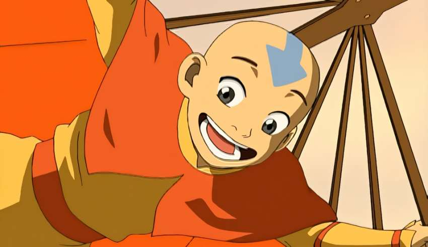

Aang
Avatar: The Last Airbender (Avatar: The Legend of Aang in some regions) is an American animated television series that aired for three seasons on Nickelodeon. The series began in February 2005 and concluded with a two-hour episode titled Sozin's Comet in July 2008. Avatar: The Last Airbender is set in an Asiatic-like world in which some people can manipulate the classical elements with psychokinetic variants of the Chinese martial arts known as "bending". The series is presented in a style that combines anime with American cartoons and relies on the imagery of East-and-South Asian, Inuit, and New World societies. It follows the protagonist, twelve-year-old Aang and his friends, who must bring peace and unity to the world by ending the Fire Lord's war with three nations.